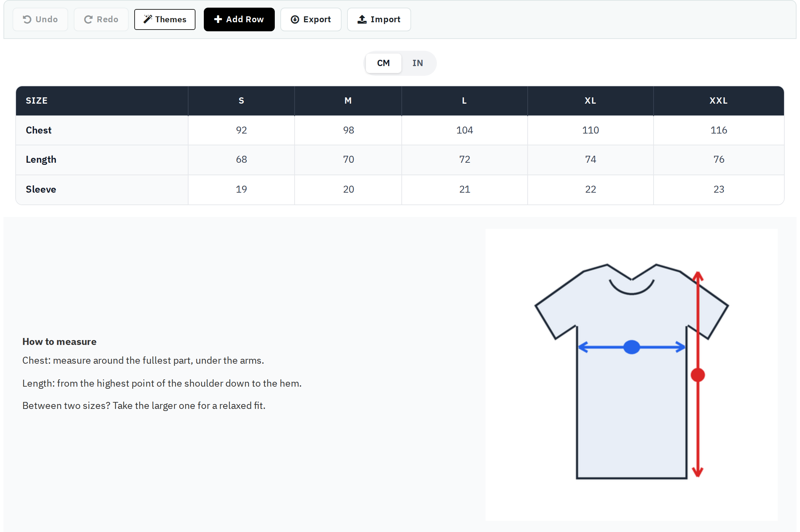

The designer builds the chart itself. A chart is made of rows; each row has one or more columns, and each column holds components. What you see in the designer is what the shopper sees.

Point at a row or a column to see its tools: drag it to another place, open its settings (spacing, background, border, shadow, column width), or delete it; a column can also be duplicated or hidden. Deleting asks first when the row or column holds components, and a row always keeps at least one column.